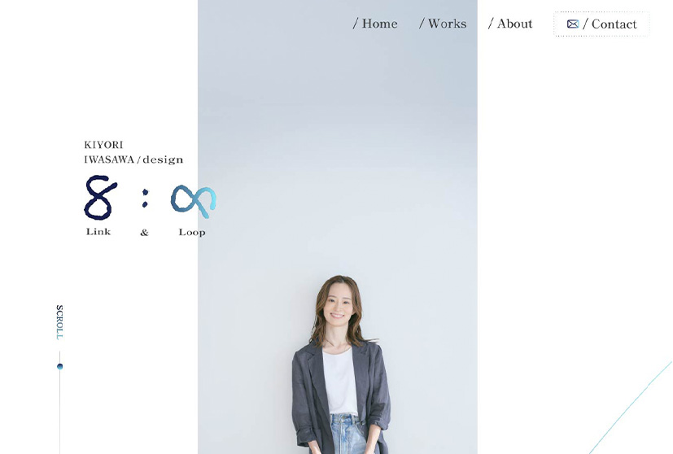
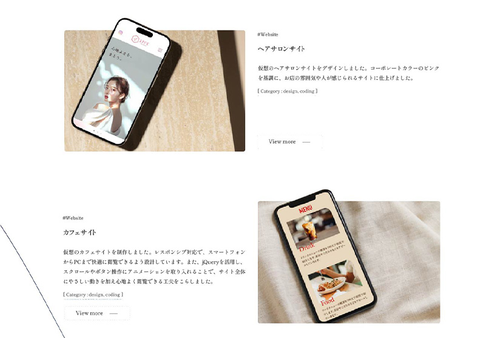
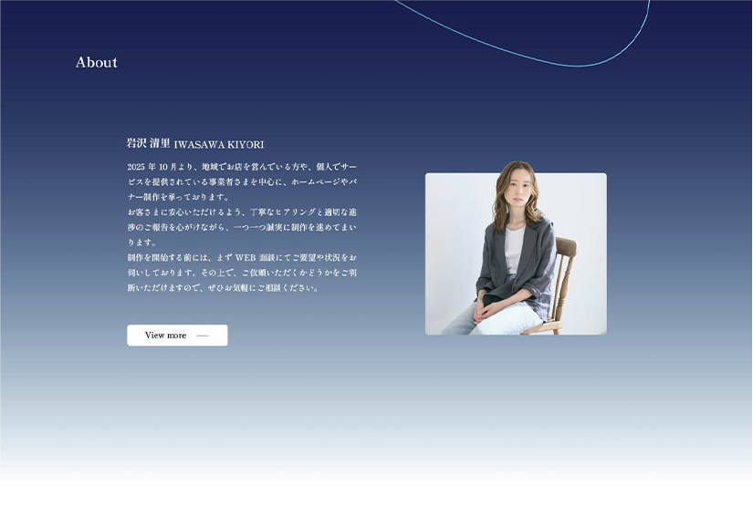
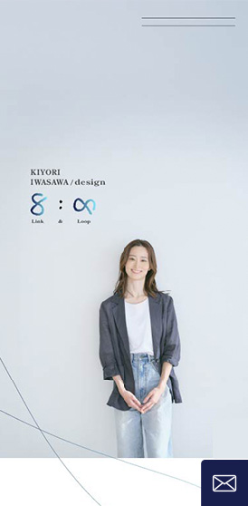
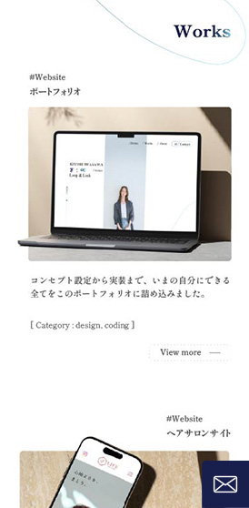
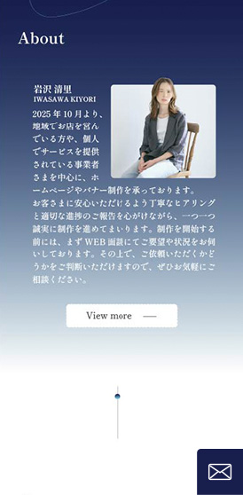

#Website
ポートフォリオ
[ Category : design, coding ]
作品やプロフィール、コンタクトフォームまでを一貫したデザインで構成。流れるようなラインを背景に取り入れることで、柔らかさと動きを演出しています。全体は落ち着いた印象を保ちつつ、動きを加えることでシンプルながらも飽きのこないデザインに仕上げています。また、閲覧者が自然にスクロールしながら情報を得られる設計を意識しています。
Point
白を基調にした余白の多いレイアウトで、作品や文章が際立つよう配慮しました。メインカラーには青のグラデーションを採用し、信頼感と落ち着きを表現。ページ全体を縦に流れる細いラインモチーフでつなぎ、ブランドロゴ「Link & Loop」の世界観を視覚的に補強しながら、動きのある演出で単調さを感じさせない構成としています。
地域でお店を営んでいる方や、個人でサービスを提供されている事業者さまなど、新規の依頼を検討するクライアントを想定し、初めて訪れた人にも安心感を与える端正で親しみやすいデザインを目指しました。





